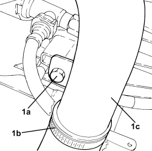
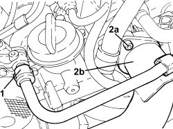
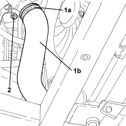
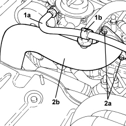

1048B22 AIR SUPPLY HOSE FROM HEAT EXCHANGER TO INTAKE MANIFOLD - R + R
- Path
- Procedures > 10 ENGINE > 1048 ENGINE AIR SUPPLY CIRCUIT > 1048B PRESSURE AIR CIRCUIT > 1048B22 AIR SUPPLY HOSE FROM HEAT EXCHANGER TO INTAKE MANIFOLD - R + R
- Kind
- repair procedure (removal / refitting; the operation number is the code)
- Applies to
- engines: 1.9 JTD 8V, 1.9 JTD 16V, 2.4 JTD 20V; all production periods
- Interactive page
- https://sloeber94.github.io/elrnDB/alfa/159/en/#/939010524
Applies to: engines: 1.9 JTD 8V, 1.9 JTD 16V; all production periods
 Removing
Removing
 Refitting
Refitting
Applies to: engines: 1.9 JTD 8V, 1.9 JTD 16V; all production periods

Applies to: engines: 1.9 JTD 8V, 1.9 JTD 16V; all production periods
Refitting
RemovingApplies to: engines: 2.4 JTD 20V; all production periods
Removing
Refitting- Position the vehicle on a lift.
Op. 7055B54 UNDER ENGINE PROTECTION/GUARD - R.R.
1. Loosen the bands (1a) and disconnect the air supply hose between the rigid pipe heat exchanger (1b), rigid pipe side.
2. Undo the nut fixing the air supply pipe from the heat exchanger to the intake manifold to the bracket.

Applies to: engines: 2.4 JTD 20V; all production periods
1. Disconnect the brake servo vacuum pipe (1a) from the collar (1b).
2. Undo the bolt (2a) and remove the air supply hose from the heat exchanger to the intake manifold (2b).
- Remove the O-ring.

Applies to: engines: 2.4 JTD 20V; all production periods
Refitting
Removing- Place the air supply sleeve from the heat exchanger to the intake manifold back in its housing complete with o-rings and secure with bolts.
- Secure the brake servo vacuum pipe using the band.
- Tighten the nut fixing the air supply sleeve from the heat exchanger to the intake manifold to the bracket.
- Connect the air supply hose from the heat exchanger to the rigid pipe, rigid pipe side and tighten the band.
Op. 7055B54 UNDER ENGINE PROTECTION/GUARD - R.R.
- Remove the vehicle from the lift.